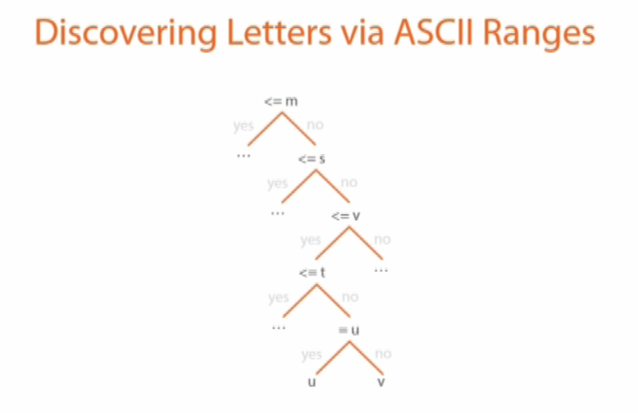

Asking questions out this ASCII range
The “m” is the center letter of the alphabet and its number is 109.
1) Is it the first letter <=m.
2) If it's not is it <=s, because “s” its the middle character between “m” and “z”.
3) It that's not is it <=v and this time is yes.
4) Now we split again and ask if it's <=t.
5) It's not therefore is “u” or “v”.
